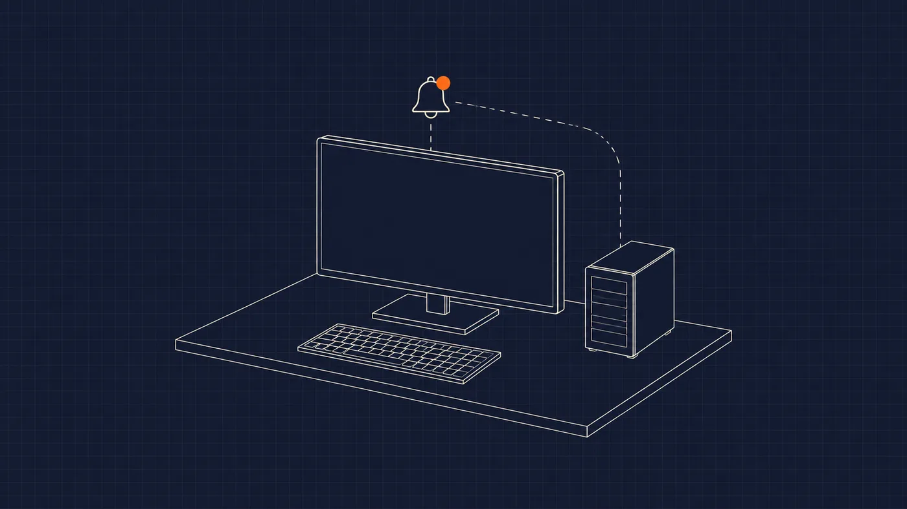

When coworkers cannot hear you in Teams, or your video tile stays dark, the cause is usually a setting rather than a broken device. Teams has to be pointed at the right microphone and camera, and Windows has to allow desktop apps to use them.
Work through the checks below in order. Most fixes take a minute, and none of them require reinstalling Teams or replacing a headset.
Start with a Teams test call
Open Teams, select Settings and more (the three dots), then Settings, then Devices. Confirm the speaker, microphone and camera listed are the ones you are actually using: a docked laptop often defaults to its built-in microphone instead of the headset on the desk. Microsoft’s device settings page also offers a test call that plays your recording back. Manage your device settings in Microsoft Teams
Before changing anything else, rule out the physical causes: a mute button on the headset cable, a function key that mutes the laptop microphone, or a sliding privacy shutter over the webcam. Unplug and reconnect a USB headset or camera once, then reopen the Devices page to see whether it appears.
Check Windows privacy settings
Windows can block every app from the microphone or camera even when Teams is configured correctly. In Windows 11, open Settings, then Privacy & security, then Microphone. Make sure microphone access is on, that apps are allowed to use it, and that desktop apps are allowed to use it. Repeat the same check under Camera. Turn on app permissions for your microphone in Windows
The desktop-app toggle matters because the Teams app on a work PC is a desktop app, so it does not always appear in the per-app list. Microsoft notes that if camera access is greyed out, an administrator has to turn it on. On a managed office computer, that is a signal to call IT rather than look for a workaround. Camera doesn’t work in Windows
Find the app that is holding the device
A camera can usually be used by one app at a time. If Zoom, a browser tab with another meeting, or a dental imaging or telehealth program still has the camera open, Teams may show a black tile. Close the other meeting apps, then quit Teams completely from the system tray and reopen it.
Next, open the Windows Camera app. If the picture works there, the camera and its driver are fine and the problem is within Teams or a permission. If it fails there too, the problem sits below Teams: the device, the cable, the dock or the driver. That one test saves a lot of guessing.
Rule out the meeting itself
If your microphone works in a test call but stays unavailable in one particular meeting, the organizer may have turned off attendee microphones or cameras. Ask the organizer before troubleshooting your own PC. Microsoft’s microphone troubleshooting article walks through the meeting-side settings as well as the device side. My microphone isn’t working in Microsoft Teams
If you join from Teams in a web browser instead of the app, check the site permissions next to the address bar. A mistaken click on Block for the camera or microphone is remembered by the browser until someone changes it.
Send IT a focused report
If the problem continues, give IT the device model, how it connects (USB, Bluetooth, dock or built in), whether the Windows Camera app or a Teams test call works, and whether the problem happens in every meeting or only one. Note any recent Windows or Teams update.
Odyssey supports offices across Greater Houston with business IT support, including standard meeting-room and headset setups. Contact Odyssey with the details above so the fix starts at the right layer.
Sources
Related guides


Windows Notifications Not Appearing? Check the Alert Path Before Missing More Work
Learn More